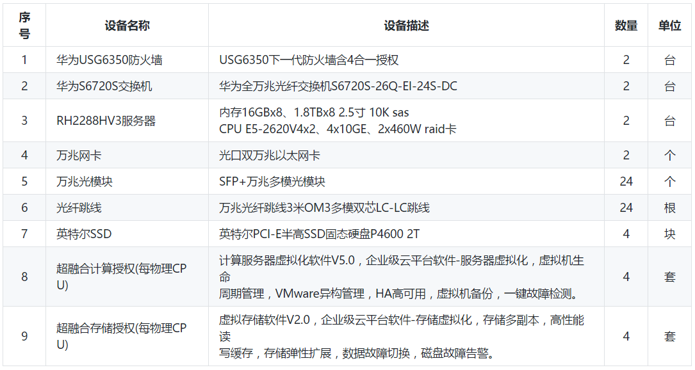
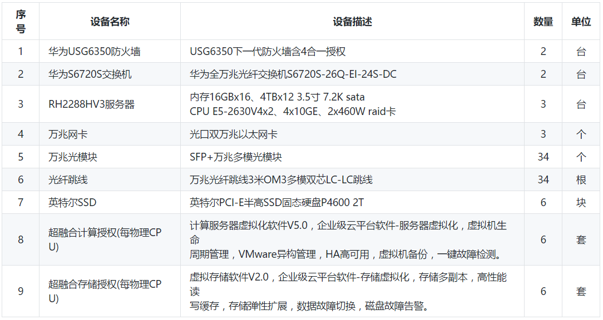

环境准备¶
部署安装之前，你应该了解下每个模块的用途，传送门
私有云用户自备设备：测点数量1万以内  备注：此方式默认采用超融合架构部署，安全等级较高，且便于管理，前期现场部署可由供货商或运维协助处理。
私有云用户自备设备：测点数量1万至10万之间  备注：此方式默认采用超融合架构部署，安全等级较高，且便于管理，前期现场部署可由供货商或运维协助处理。
半私有云设备清单：用户提供虚拟机或租赁云资源
配置规格 资源配置参考清单 台数 备 注
经济适用版 8核CPU32G内存10M带宽标配 2 性能有限，可用率较低
基础冗余版 8核CPU16G内存10M带宽标配 6 数据冗余，可用率良好
高可用版 8核CPU32G内存20M带宽标配 8 性能良好，可用率乐观
集团专属版 8核CPU32G内存30M带宽标配 12 集团专属，可靠性及较高
备注：存储空间说明，由测点量、采集频率和存储年限共同组成，详情参考自动计算文档
对外开放端口清单，映射需采用对外不对等方式开通
端口号 用途说明 备注
80 芒果系统平台专用端口 芒果平台专用
5666 ht监视画面对外端口 监视画面专用
8090 图片服务器对外端口 图片服务专用
8091 报表服务器对外端口 报表服务专用
5191 璇思网关数据采集主端口 璇思网关数据采集专用
5192 璇思网关数据采集备端口 璇思网关数据采集专用
6181 璇思网关管理平台主端口 璇思网关网管管理专用
6182 璇思网关管理平台备端口 璇思网关网管管理专用
备注：所有映射端口，均需与应用所在的服务器相关端口保持一致，其它网关类似。
各个环境下部署方式介绍
私有云无设备 集中采购设备和超融合授权 镜像导入，脚本启动
私有云有设备 按用户需求择优选择虚拟化 镜像导入，脚本启动
私有云自备虚机 脚本、模板、镜像方式部署 文档交付，脚本启动
半私有云租赁虚机 脚本、模板、镜像方式部署 文档交付，脚本启动
半私有云租赁昊沧 脚本、模板、镜像方式部署 文档交付，脚本启动
备注：开发和调试机默认以最小环境运行，采用一键部署方式搭建。
本项目部署方式介绍
此部署为高可用分布式架构默认标配8台，标准架构6台无冗余
如客户环境不满足条件，可将web应用和mysql数据库机器合并使用
Web微服务应用和数据库建议配置
系统： CentOS7+
CPU： 8Core+
内存： 32G+
磁盘： >=100+
标配： 3台
大数据采集数据处理建议配置
系统： CentOS7+
CPU： 8Core+
内存： 16G+
磁盘： >=500+
存储空间计算参考:100个测点1分钟采集一次，年存储空间消耗30GB。标配： 5台
准备基础环境
基础环境需要用到以下服务，我们也提供了简单的初始化脚本
建议版本
Nginx-1.16.0
Mysql-5.7.26
Emqttd-3.0.0
Mongodb-3.6
Hadoop-2.7.7
Zookeeper-3.4.14
Hbase-1.2.12
Kafka-2.12
Storm-1.2.2
Opentsdb-2.4.0
Fastdfs-5.11
Redis-4.0.10
Docker-ce 18.09.7
优化系统
注意：
如果你的系统是新的，我们建议你先优化下系统，同样我们也提供了优化系统脚本
以下基础环境中，若你的系统中已经存在可跳过，直接配置，建议使用我们推荐的版本
创建项目目录
$ mkdir -p /opt/mango/ && cd /opt/mango/
环境变量
以下内容贴入到
vim /opt/mango/env.sh文件，刚开始接触这里可能会稍微有点难理解，后面文档将会说明每个环境变量的用途，主要主机IP地址/root密码和虚拟VIP地址。source /opt/Mango/env.sh
cat <<'EOF' >conf.cfg
#注意：SERVERS一定要做修改，需该为各节点地址!!!
#注意：PASS一定要做修改，需该为节点root密码!!!
#注意：KEEP_VIP一定要做修改，此处为虚拟VIP地址!!!
# IP与主机名对应
SERVERS=(192.168.2.71 192.168.2.72 192.168.2.73 192.168.2.74 192.168.2.75) #修改各节点对应的IP地址
HOSTS=(node01 node02 node03 node04 node05) #修改各节点对应的主机名称，可保留默认。
# 免密码登录账号密码
USER=root
PASS=redhat #修改节点对应的root密码
SSH_PORT=22
# 下载的软件包路径
PACKAGE_DIR=/home/software
# 需要编译的软件解压路径
SOURCE_DIR=/usr/local/src
# 程序安装路径
SOFT_INSTALL_DIR=/home/hadoop
# 数据存储路径
DATA=/home/hadoop
# zookeeper
ZOO_SERVER='node01 node02 node03 node04 node05'
# hadoop
# namenode HA
HDP_NN1='node01'
HDP_NN2='node02'
HDP_RM1='node01'
HDP_RM2='node02'
# 安装 namenode 主机
NameNode='node01 node02'
# 安装 datanode 主机
DataNode='node03 node04 node05'
# fastdfs
# 数据存储路径
TRACKER_DIR=$DATA/fastdfs/tracker
STORAGE_DIR=$DATA/fastdfs/storage
# 配置 tracker 角色的主机
TRACKER_SERVER='node03 node04 node05'
# 配置 storage 角色的主机
STORAGE_SERVER='node01 node02'
# storage 角色主机 keepelived 配置(8888端口高可用)
# keepalived master角色
KEEP_MASTER='node02'
# keepalived VIP
KEEPLIVED=yes
KEEP_VIP=192.168.2.70 #修改keepalived svip虚拟地址
# hbase
# hbase 主节点
HBASE_MASTER='node01'
# hbase 从节点
HBASE_SLAVE='node02 node03'
# opentsdb
TSDB_SERVER='node04 node05'
# kafka
KAFKA_SERVER='node03 node04 node05'
# storm
# storm 主节点
STORM_MASTER='node01'
# storm 从节点
STORM_SLAVE='node02 node03'
#---------------------------------
# 软件版本 #
#---------------------------------
JDK_VER=8u211
ZOOKEEPER_VER=3.4.14
HADOOP_VER=2.7.7
HBASE_VER=1.2.12
OPENTSDB_VER=2.4.0
KAFKA_VER=2.12-2.2.0
STORM_VER=1.2.2
FASTDFS_VER=5.11
LIBFASTCOMMON_VER=1.0.39
NGINX_VER=1.14.2
FASTDFS_NGINX_MODULE_VER=1.20
EOF
source /opt/Mango/env.sh, 最后一定不要忘记source
安装Docker-compose
若已安装docker-compose可跳过
echo -e "\033[32m [INFO]: Start install docker,docker-compose \033[0m"
yum remove docker docker-common docker-selinux docker-engine -y
yum install -y yum-utils device-mapper-persistent-data lvm2
yum-config-manager --add-repo http://mirrors.aliyun.com/docker-ce/linux/centos/docker-ce.repo
yum makecache fast
yum install docker-ce -y
###启动
systemctl start docker.service
### 开机自启
systemctl enable docker.service
#安装docker-compose编排工具
curl https://bootstrap.pypa.io/get-pip.py -o get-pip.py
python get-pip.py
pip install docker-compose
if [ $? == 0 ];then
echo -e "\033[32m [INFO]: docker-compose install success. \033[0m"
else
echo -e "\033[31m [ERROR]: docker-compose install faild \033[0m"
exit -2
fi
安装MySQL
一般来说 一个MySQL实例即可，如果有需求可以自行搭建主从，每个服务都可以有自己的数据库 我们这里示例是用Docker部署的MySQL，你也可以使用你自己的MySQL。
#设置你的MYSQL密码
export MYSQL_PASSWORD="WkpqWqGaL14D851F"
echo -e "\033[32m [INFO]: Start install mysql5.7 \033[0m"
cat >docker-compose.yml <<EOF
mysql:
restart: unless-stopped
image: mysql:5.7
volumes:
- /data/mysql:/var/lib/mysql
- /data/mysql_conf:/etc/mysql/conf.d
ports:
- "3306:3306"
environment:
- MYSQL_ROOT_PASSWORD=${MYSQL_PASSWORD}
EOF
docker-compose up -d #启动
if [ $? == 0 ];then
echo -e "\033[32m [INFO]: mysql install success. \033[0m"
echo -e "\033[32m [INFO]: 没有mysql客户端的同学自己安装一下子哈, yum install mysql -y. \033[0m"
echo -e "\033[32m [INFO]: mysql -h127.0.0.1 -uroot -p${MYSQL_PASSWORD} \033[0m"
else
echo -e "\033[31m [ERROR]: mysql57 install faild \033[0m"
exit -3
fi
安装Redis
### 设置你的redis密码
export REDIS_PASSWORD="TL3lV9jCzM3ubWdg"
echo -e "\033[32m [INFO]: Start install redis3.2 \033[0m"
yum -y install redis-3.2.*
echo "[INFO]: start init redis"
### 开启AOF
sed -i 's#appendonly no$#appendonly yes#g' /etc/redis.conf
### 操作系统决定
sed -i 's#appendfsync .*$$#appendfsync everysec$#g' /etc/redis.conf
### 修改绑定IP
sed -i 's/^bind 127.0.0.1$/#bind 127.0.0.1/g' /etc/redis.conf
### 是否以守护进程方式启动
sed -i 's#daemonize no$#daemonize yes#g' /etc/redis.conf
### 当时间间隔超过60秒，或存储超过1000条记录时，进行持久化
sed -i 's#^save 60 .*$#save 60 1000#g' /etc/redis.conf
### 快照压缩
sed -i 's#rdbcompression no$#rdbcompression yes#g' /etc/redis.conf
### 添加密码
sed -i "s#.*requirepass .*#requirepass ${REDIS_PASSWORD}#g" /etc/redis.conf
systemctl start redis
systemctl status redis
systemctl enable redis
if [ $? == 0 ];then
echo -e "\033[32m [INFO]: redis install success. \033[0m"
echo -e "\033[32m [INFO]: redis-cli -h 127.0.0.1 -p 6379 -a ${REDIS_PASSWORD}"
else
echo -e "\033[31m [ERROR]: redis install faild \033[0m"
exit -4
fi